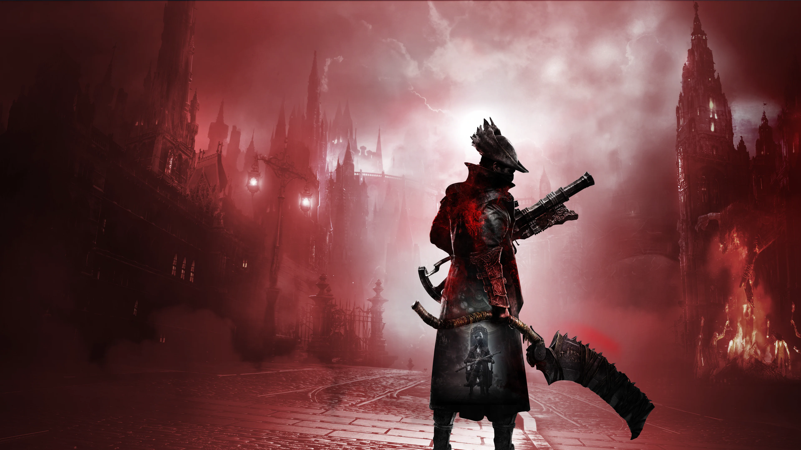

Experiența mea
Pentru mine, acest joc a fost o experiență de neuitat. L-am jucat prima dată când aveam 13 ani și am crezut că este cel mai greu joc pe care l-am jucat vreodată, având în vedere faptul că nu l-am putut învinge nici pe al doilea Boss. Mi-a luat ceva timp să mă adaptez stilului de joc și să realizez că făceam greșeli stupide care duceau la moartea mea din nou și din nou. Nu este un joc prietenos pentru începători, te învață pe calea grea și te face să te gândești activ la fiecare mișcare, aproape ca șahul dar mult mai violent și mai mortal. Majoritatea oamenilor consideră jocurile o pierdere de timp, dar acest joc m-a învățat răbdarea, perseverența, strategia, și cel mai important lucru, cât de satisfăcător este să depășești provocările și cât de important este să nu renunț orice s-ar întâmpla.
Un tutorial rapid.